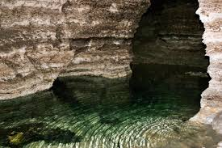
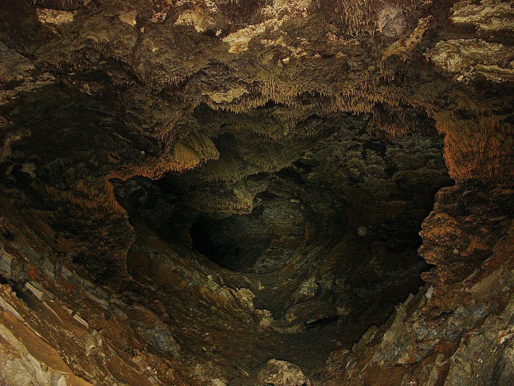

La grotte a été ouverte en 1959. Lors du dynamitage visant à agrandir la carrière de plâtre de la zone, on a découvert l’embouchure de la grotte, à partir de laquelle une énorme quantité d’eau s’écoulait. En conséquence, la carrière a été inondée, les mines ont été suspendues et la cavité de la grotte a été ouverte. Les travaux de recherche ont commencé après un séchage partiel. Ainsi, l'une des plus grandes grottes en pierre de gypse au monde a été découverte. Les habitants l'appelaient Cendrillon.

GROTTE DE CENDRILLON

Il y a plus de 20 lacs dans les vides karstiques, les plus grands étant: le lac Dakov, le lac Vert, le gouffre d'eau, le lac Bleu, le lac des Dinosaures, le lac Nautilus, nommés pour la culture, l'imagination et la passion des spéléologues. Les analyses hydrochimiques montrent que l'eau des lacs est riche en minéraux ayant un effet thérapeutique sur le corps humain. Un fait curieux de la grotte, qui n’a pas encore été complètement expliqué, est que chaque couloir et passage souterrain est bordé de petites argiles de différentes nuances, dues à la minéralisation aléatoire: vert, bleu, rouge, noir, blanc ... Des amateurs de spéléologues se sont formés le long de certains itinéraires souterrains, d'étranges figurines d'argile utilisant des indicateurs spirituels indiquant la direction vers différentes salles et d'intéressants labyrinthes pour les visites.

La plupart des salles ont un plafond gothique voûté d'environ 11 mètres de haut. La largeur des tunnels atteint 30 à 40 mètres et la longueur est de 60 à 100 mètres. Dans la salle d'attente, 11 colonnes soutiennent le plafond, dont l'une n'atteint pas le sol de près d'un mètre en raison du fait que son socle a été emporté. Il y a plusieurs puits dans les galeries. La plupart des plafonds et des murs ressemblent à des mosaïques en raison de la cristallisation du gypse. Si vous illuminez les murs et les plafonds de grottes formées au cours de plusieurs millions d'années, vous serez émerveillé par la gamme de cristaux scintillants que vous voyez. Certaines étoiles continuent à briller même après avoir éteint les lumières.
La grotte Cendrillon de Kriva peut être utilisée comme attraction touristique, car elle occupe la troisième place en Europe en longueur et en grandeur et la septième place mondiale parmi les grottes à gypse.